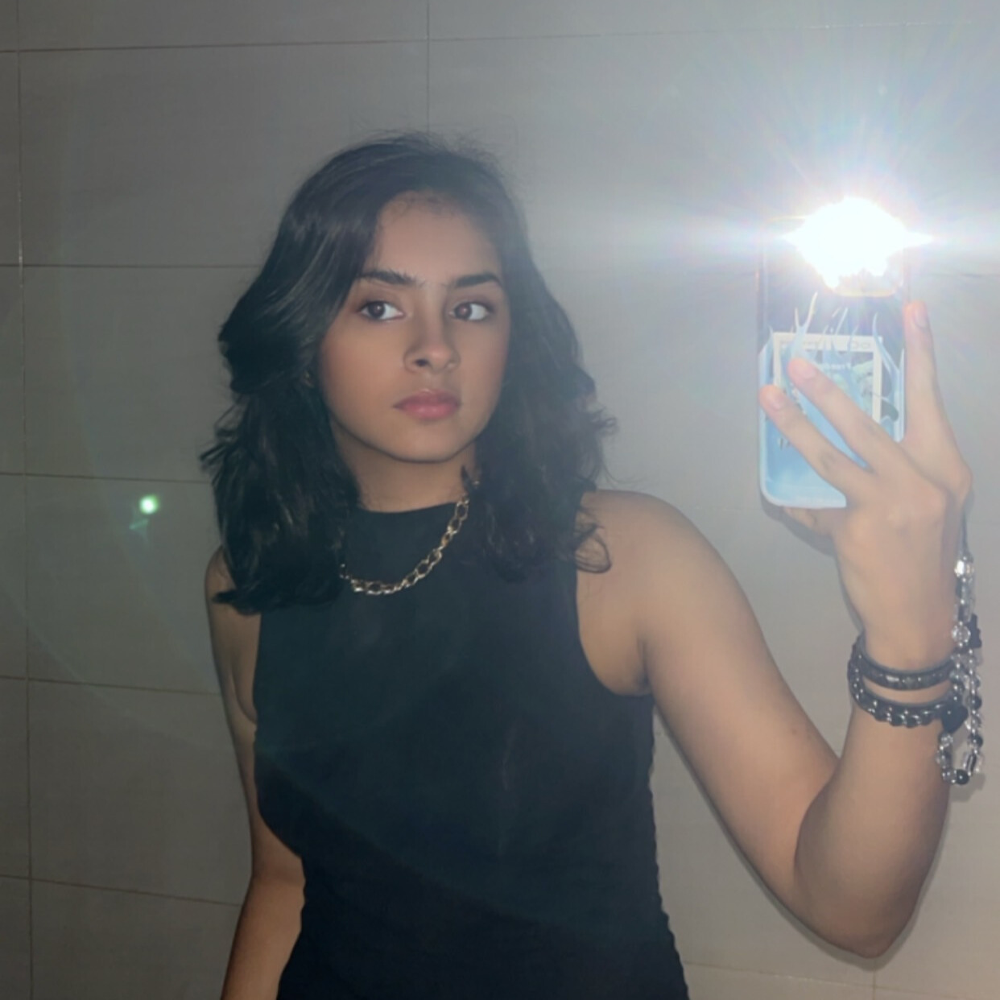

Kritika Manghnani
About Me
Hi! I am a 15-year-old girl living in Shenzhen, China. I was born on April 29. I'm a very serious, hard-working and determined person. Some hobbies and skills that I have include, coding, video-editing, writing, acting, content-creating, guitar, basketball, and singing.
Extracurriculars
💻 Coding
One of my current extracurriculars is coding. Curretly I know how to code in HTML and CSS. Right now I'm studying how to code with Python.
🎭 Acting
One of my extracurriculars is being in my school's drama class. I've acted in our annual play as the characters Gabrielle and Jessica. I've also took part in our annual Haunted House, where I played the Jack-in-the-Box. Being part of the drama class also taught me any things about what happens behind-the-scenes. I've made videos, found costumes, wrote advertising scripts, and created props for the play and Haunted House.
🏀 Basketball
Another one of my extracurriculars and hobbies is basketball. I don't play a lot of sports, but I do really enjoy playing this one. It keeps me active, it helps me train my quick thinking skills, as well as my group-interaction.
Academic History
Kindergartens
1️⃣ Wen-Hua Kindergarten
When I was 2 and a half years old. I went to Wen-Hua Kindergarten. I was there for 6 months.
2️⃣ Smartforce Kindergarten
When I was 3 I moved to Smartforce Kindergarten. I completed my Kindergarten stage there. While in Smartforce I learned a lot and recieved many awards as a kid.
Primary / Elementary
1️⃣ Funful Bilingual school
I started first grade in Funful Bilingual School. The school had a very chinese style of teaching. It was very nice, but I only stayed there for a year.
2️⃣ FIFA Bilingual and International School
For the rest of Elementary, I stayed in FIFA International School. There were two departments, one Bilingual and one International. I stayed in International, and completed 2nd - 5th grade there.
Middle School & High School
QSI International School
Currently, I am in QSI International School. I started going there in 2020 during online school. Which is when I started 6th grade. Now I am in 10th grade in the Secondary Campus.